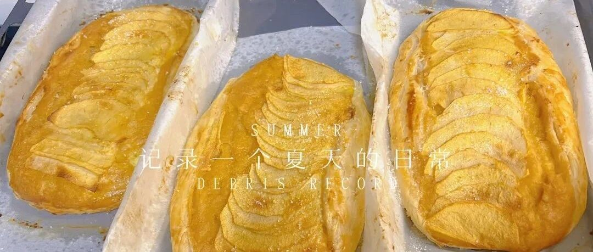

一天一苹果，风中带秋色 - 太好吃的苹果派
水星婆婆做过很多关于苹果的甜品了，现在物流发达了，多种多样的水果层出不穷，去年在喜茶喝到的黄皮，今年也吃到了，反而最最简单的苹果，要被人遗忘了。
今天要做的甜品也是在看视频的时候突发奇想，对的，偷懒小主妇的手抓饼又要来助阵了。
3个半苹果切块
100g 黄油
半个柠檬汁
一起熬煮30分钟，用破壁机打成泥，放凉。
手抓饼刷蛋液，中间放入苹果泥，上面铺上剩下半个苹果的切片，
再把旁边折进去一些，再刷蛋液，表面撒白砂糖。
180度 中上层35分钟
苹果皮+苹果芯儿，加水没过，煮30分钟，倒出来的苹果汁+一半的白糖+半个柠檬，继续开着盖熬煮。就成了苹果胶。没耐心煮那么久也没关系的，比较粘稠就好了。
等烤好了，可以刷一下苹果胶，我没刷，留着冲水喝了，不然太甜了。
真的真的太好吃了！！！
我做苹果派，派皮底部一直会有点水水的，这个就不会，手抓饼烤的脆脆的，因为是果泥+切了片的苹果，所以也比较容易熟吧。
不得不多说一句，这是谁老公啊，切工这么优秀！！！！